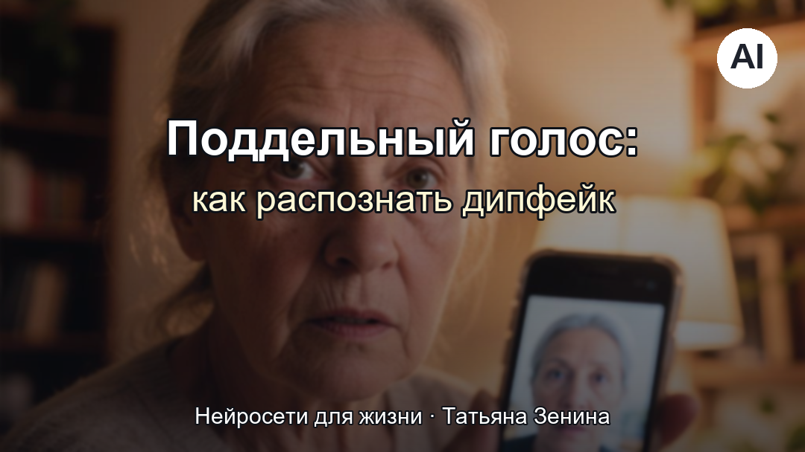
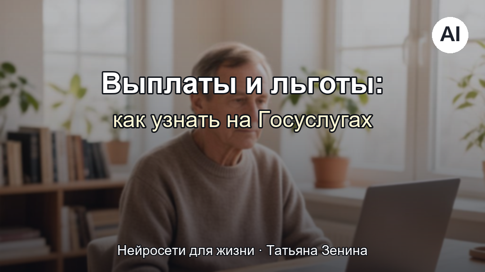
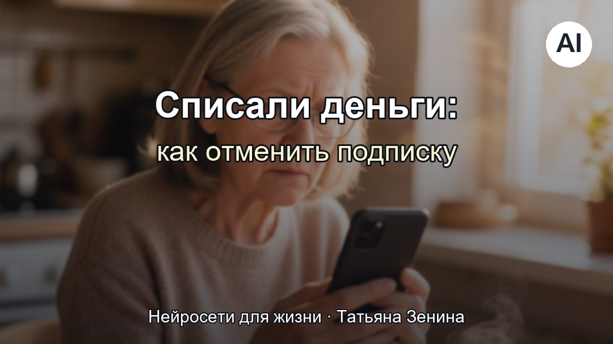
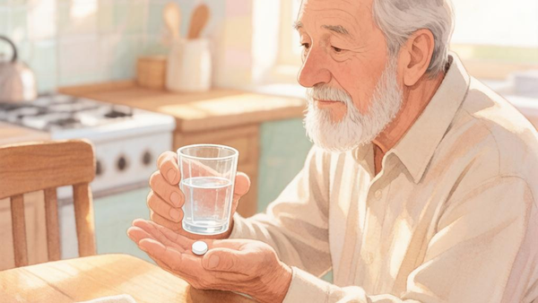
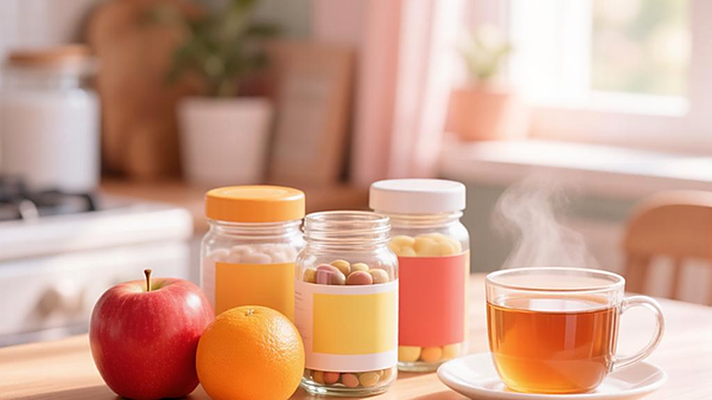

Нейросети для жизни
Просто о главном: для людей в возрасте. Статьи, советы, личный опыт.
Здравствуйте, дорогие мои!
Меня зовут Татьяна Зенина, я живу в Астрахани, мне за шестьдесят. Этот сайт — про нейросети, но написано здесь совсем не научно: простыми словами, с примерами из жизни. Здесь я отвечаю на вопросы, которые чаще всего задают люди в возрасте.
Подписывайтесь на канал, чтобы не потеряться. Мои книги — «Нейросети для жизни» в четырёх томах — можно получить любым удобным способом (см. ниже).
Что я пишу
Двухфакторная защита за 5 минут: второй замок для пенсии и Госуслуг
Как включить подтверждение входа по коду и зачем это нужно для ваших денег и документов.
Читать статью
Поддельный голос внука: как распознать дипфейк и не отдать деньги
Как проверить подозрительный звонок и защитить близких от мошенников с новыми технологиями.
Читать статью
Госуслуги: как узнать, какие выплаты и льготы вам положены
Какие сведения доступны на Госуслугах и в ЕГИССО и что делать дальше.
Читать статью
Списали деньги за бесплатное приложение — как отключить подписку и вернуть своё
Пошагово: где найти подписку, как её отключить и попробовать вернуть деньги.
Читать статью152-ФЗ: ваши данные, ваши права — просто о главном
Что компаниям можно делать с вашими данными и как потребовать их удалить.
Читать статью
Статины: 6 мифов, о которых важно знать
Разбираем самые распространённые страхи про препараты, снижающие холестерин.
Читать статью
БАДы: правда и риски, чтобы не навредить себе
Как читать состав, где искать проверенную информацию и почему БАДы не заменяют лекарства.
Читать статьюДавление после 60: какая норма и как контролировать
Понятно о цифрах тонометра, дневнике измерений и визите к врачу.
Читать статьюЧек-лист «10 вечеров»: бесплатный старт в нейросетях
Простые первые шаги: как за десять вечеров подружиться с нейросетью и не испугаться.
Читать статьюКниги «Нейросети для жизни» — четыре тома
Выберите, как вам удобнее получить книги:
Скачать на сайте (по почте) Получить в Telegram Получить во ВКонтакте
Если Telegram у вас открывается плохо, это не ваша вина. Выберите другой способ выше — книги пришлю письмом или через ВКонтакте.
Как убедиться, что это действительно я
Мошенники копируют страницы авторов и «продают» курсы от их имени. Мои настоящие адреса — только эти:
- Этот сайт: neuro-retree.github.io/site
- Telegram-канал: t.me/neuro_retree
- Бот для книг: @tatzenbot
- ВКонтакте: vk.com/club242405739
- Поддержка на Boosty: boosty.to/tatzen
- Почта: neuro-retree@yandex.ru
Я никогда не прошу номер карты, коды из СМС, паспортные данные или «срочный перевод». Если кто-то пишет от моего имени и просит такое — это мошенники.
Поддержать автора
Материалы на сайте бесплатны. Если захотите сказать спасибо, можете угостить меня чашкой чая — это лучшее признание. Возможно, в будущем появятся платные курсы; о них я буду писать отдельно и честно.
Перевод по СБП или QR-коду появятся позже — как только разберусь с оформлением. Пока что Boosty и VK — самые простые пути.